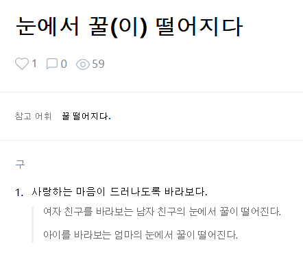
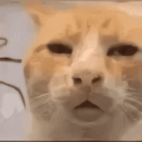
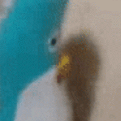

멤버들이 런웨이 하는 거 바라보는 피프티피프티 키나

멤버들이 런웨이 하는 거 바라보는 피프티피프티 키나

hoxy 여자 눈에 진짜 꿀을 던지진 않았나요?
님 눈 맞을때 아니고요?
그냥 넌 눈알 떨어지면 좋겠다


눈을 마구 치셨나요?


정중하게 눈탱이 좀 밤탱이로 만들어도 되겠습니까?
주먹으로 쳤을때 아니고?
저 노래 진짜 너무 좋아서 플리 넣어두고 계속 듣는중인데
암으로 시한부 판정 받은 아버지께 바치는 헌정곡이라는 게 진짜 눈물 남
오른쪽 예원이도 있음
피프티는 지금보다 더 잘 돼야 하는데 큐피드 같은 노래 하나 더 뽑자
쇼츠나 틱톡용 브금 잘 뽑는 거 아니면 노래로 성공은 사실 말이 안 되는 거고
쌓아둔 인지도로 레거시건 웹이건 예능 출연 늘이는 게 성공에는 더 쉽고 편한 길인데
개 같은 소속사가 예능을 안 내보냄
그것도 있는데 지금 피프티는 예능을 아주 잘하지 못한다고 가 내 생각임
지금 대세인 리센느 처럼 모든 멤버가 다 예능적인 재능은 없는 것 같다
피프티 자컨을 자주 보는데 큰 재미는 없더라
sos있음 뮤비 하나 존나이쁨
얘들 포텐은 높은 것 같은데 터지질 못하네
를 바라보는 내 눈에서도 꿀이 떨어지오

예쁘다 이러네 ㅋㅋ
예원이가 진짜 뭔가 "예쁘장하다"란 말의 표본처럼 생긴 듯
꿀 떨어지는 모습이 귀엽네 ㅋㅋ
나랑 눈마주쳤을때 같은데